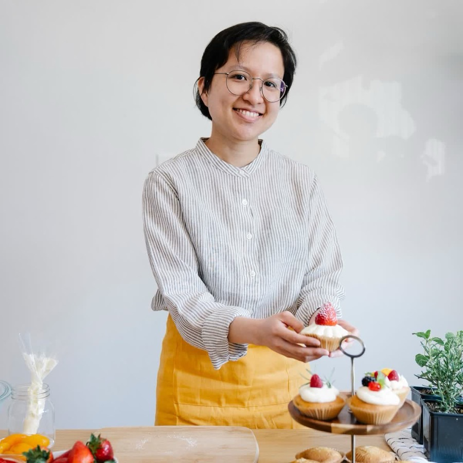

From a Kitchen Starter to Walcot Street
Lune & Crumb began in 2016 as a single sourdough starter, kept alive on a windowsill above a shared kitchen in Bathwick. Our founder, a former pastry chef, spent two years perfecting a 36-hour cold-ferment method before ever selling a loaf commercially.
In 2018 we opened our first hatch on Walcot Street — a narrow, unassuming storefront in Bath's antiques and artisan quarter — with a single wood-topped counter and a wholesale flour deal with a Somerset mill three miles from the city.
Today, the same wild starter (now over nine years old and lovingly nicknamed "Gladys") leavens every loaf we bake. We still mill nothing ourselves, source everything from within forty miles, and refuse to freeze or par-bake — every item on our counter was shaped and baked that same morning.

Thirty-Six Hours, Every Time
Before Lune & Crumb, our founder worked the pastry section of a professional kitchen. The bakery grew out of two years spent testing one method on one starter, until the 36-hour cold ferment gave the crust and crumb we still bake for today.
Good bread can't be hurried. The flour, the starter and the clock do most of the work. We just turn up early.Founder & Head BakerLune & Crumb, since 2016
Milestones Along the Way
The Starter is Born
A single jar of wild-fermented flour and water, cultivated in a Bathwick kitchen, becomes the foundation of every future loaf.
Walcot Street Hatch Opens
Our first storefront opens its shutters — a narrow counter selling out most mornings within two hours.
Cultured Butter Pastry Line Launches
We introduce hand-laminated, 27-layer viennoiserie using cultured butter from a family creamery in the Mendips.
WhatsApp Morning Reserve
To beat the sellout queue, we launch same-morning reservations over WhatsApp — now most of our daily orders.
Still Baking, Still Small
No second branch, no wholesale accounts — just one hatch, one oven, and the same wild starter that started it all.
The Hands Behind the Dough
A small team of three, in the kitchen before sunrise, six days a week.

A Morning in Motion
Every loaf starts hours before the shutters open — here's a glimpse of what that looks like.
Classes at the Bakery
Small groups around our bench on Sunday afternoons, once the counter has closed. Places are arranged over WhatsApp.
Sourdough Basics
Feeding a starter, shaping, scoring and baking a loaf. You go home with dough and a jar of starter.
Ask about a place →Laminating Workshop
Folding cultured butter into dough, turn by turn, and shaping your own croissants and escargots.
Ask about a place →Starter Swap
Bring a jar of your starter, take a spoon of Gladys. An informal hour of tips, troubleshooting and coffee.
Ask about a place →